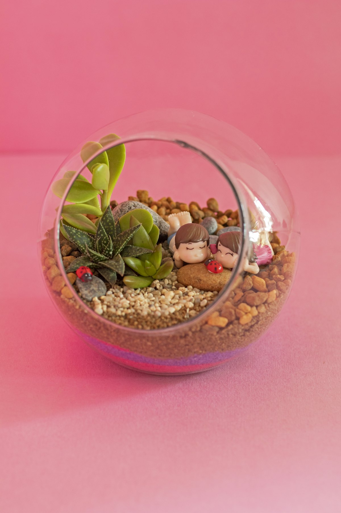
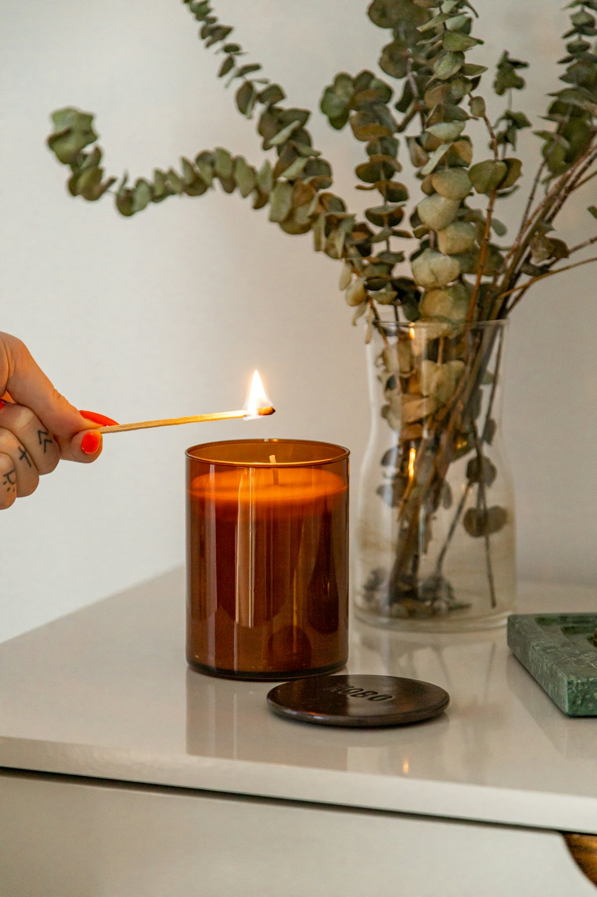
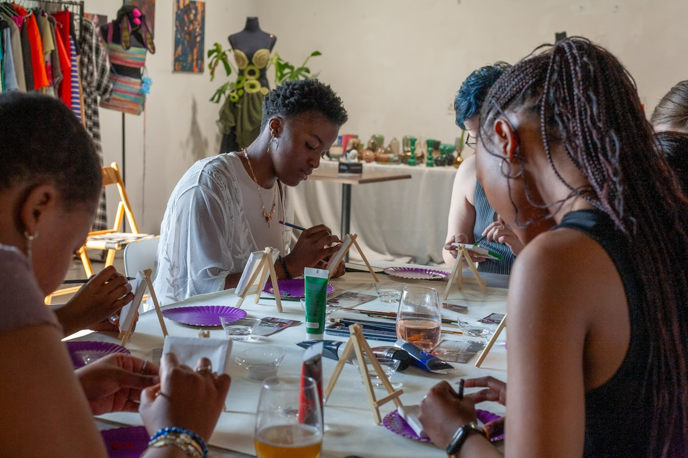
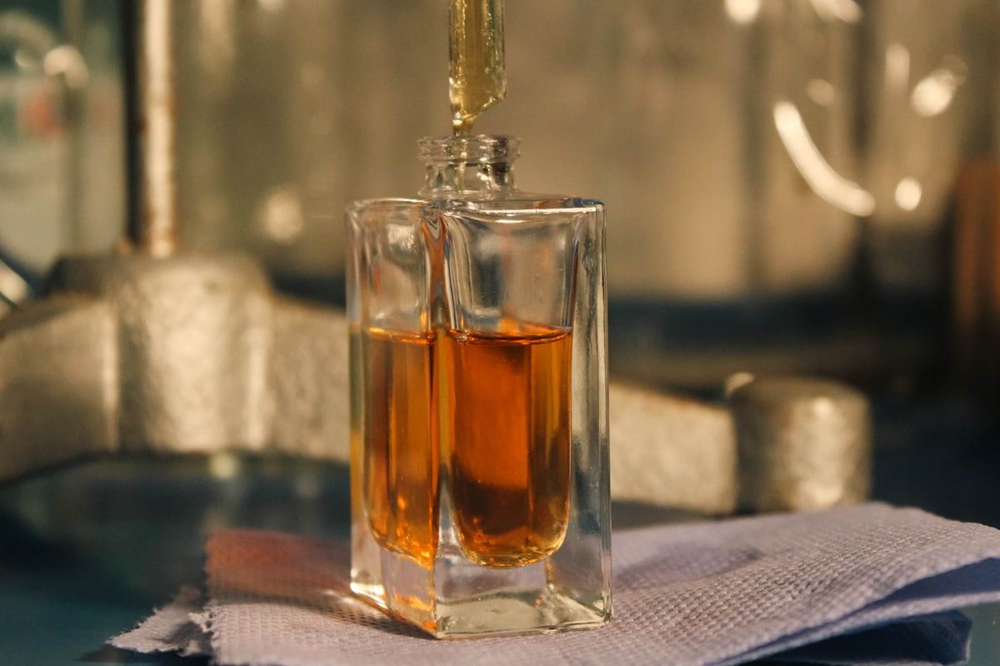

Make · 만들기
식물 한 그루 그로브
작은 화분을 함께 만들고, 하나는 기부처에 전해요. 식물을 키우며 모임의 연결도 함께 자랍니다.

작은 화분을 함께 만들고, 하나는 기부처에 전해요. 식물을 키우며 모임의 연결도 함께 자랍니다.

나만의 향을 조합해 캔들을 만드는 무드 클래스. 손은 바쁘고 대화는 자연스러워지는 시간이에요.
같은 취향을 가진 소수가 모여 깊은 대화를 나눠요. 가볍게 시작해 진짜 연결로 이어지는 모임.

잘 못 그려도 괜찮아요. 결과물보다 그리는 시간 자체를 즐기는, 부담 없는 드로잉 모임이에요.

여러 향을 직접 블렌딩해 세상에 하나뿐인 향수를 만들어요. 향을 고르며 자연스럽게 나의 취향도 함께 나누게 돼요.
Why join
최대 6명. 스쳐 지나가는 모임이 아니라 이름을 기억하는 관계가 됩니다.
대화만 하고 끝나지 않아요. 내가 만든 무언가를 가지고 돌아갑니다.
모임 수익의 일부가 기부로 이어져, 즐긴 만큼 따뜻한 변화가 됩니다.
모임을 열고 싶지만 자신이 없나요? 준비 키트부터 운영 동행까지, 소셜그로브가 처음부터 끝까지 함께합니다.
열고 싶은 모임의 아이디어를 가볍게 남겨주세요.
진행 가이드·재료 키트·공간을 운영팀이 함께 챙겨요.
첫 그로브는 운영팀이 같이 들어가 부담을 덜어드려요.
이제 나만의 그로브로! 수익 일부는 함께 기부해요.